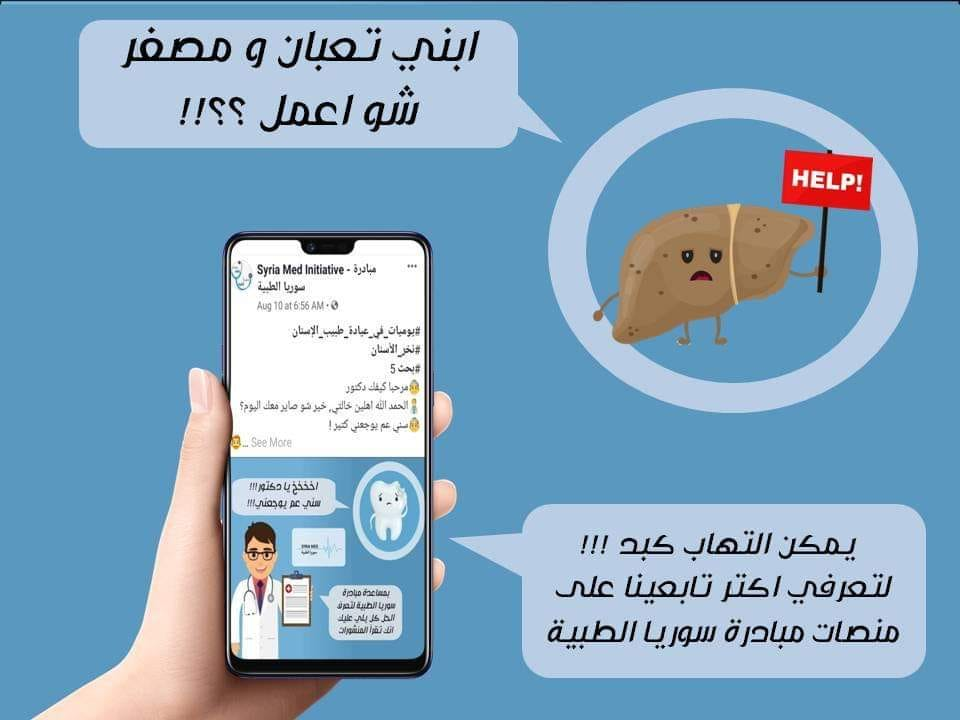
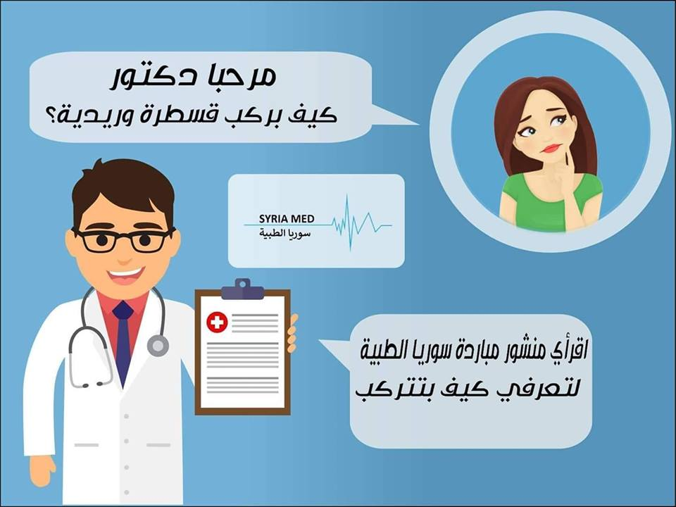

تعرف على أهم اسباب التهاب الكبد وطرق الحماية منه

كتير منسمع بأشخاص انصابو بالتهاب الكبد او توفوا من وراه.
التهاب الكبد من الاسم بيصيب الكبد وممكن ينشفى ذاتياً من دون علاج
بس يا ترى شو هو التهاب الكبد وليش مننصاب فيه وكيف منعرفه ومنتفاداه كل هاد رح نحكيه اليوم
بهي المقالة الاتية
نخر الاسنان ما هو؟ وكيفية علاجه؟ والوقاية منه؟
نخر يعني انتان (مرض جرثومي ) بتسببه انواع خاصة من الجراثيم بتأدي لتخرب
النسج الصلبة بلأسنان
بسبب الجراثيم بتكون موجودة بالفم بنسبة قليلة جداً بشكل طبيعي بس اذا ما اعتنينا بأسنانا و فرشينها بتزيد هل الجراثيم و بتتكاثر والذي يؤدي الى النخر
كيفية تركيب قسطرة وريدية وازالتها و نصائح هامة

القسطرة الوريدية هي يلي بينعطى عن طريقها السيروم و الأدوية الوريدية (التي تعطى عن طريق الوريد) وتستخدم احياناً لإعطاء الأدوية بشكل مزمن مع تبديل كل فترة مشان ما تأنتن وهلق حنعرفكن اكتر عن القسطرة الوريدية و كيفية تركيبها و ازالتها
اقرؤا المقالة لمعرفة المزيد
قصور نشاط الغدة الدرقية تعرف على أعراضه وطرق العلاج

لغدة الدرقية موقعها بمقدمة رقبتنا، أمام القصبة الهوائية ومنسميها غدة صماء لأن مفرزاتها بتنطرح بالدم مباشرة بلا وسيط
وهي مسؤولة عن افراز 3 هرمونات هنن
اليود التيروكسين التيرونين
ورح نتعرف اكثر عن الغدة الدريقية ووظائفها وامراضها بالمقالة الاتية
السيتامول؟ تعرف على فوائده واستخداماته ومضاره

وهو مسكن لألأم وخافض للحرارة مستخلص من القطران اسمه العملي باراسيتامول
شائع كثيرا أن يكون على شكل حبوب
تستمر فاعاليته 6 ساعات وتبدأ فعاليته بعد 10 دقائق الى ساعة
ويساخدم لعلاج الحرارة العالية و الصداع والاوجاع
,
تعرف اكثر عليه في هذه المقالة